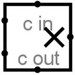

乘法器
乘法器
| 库： | 算术 |
| 引入版本： | 2.0 Beta 20 |
| 外观： |
 |
行为
该组件将来自西侧输入的两个值相乘，并在东侧输出乘积。该组件的设计使其可与其他乘法器级联，以对单个乘法器无法处理的更多位被乘数进行乘法运算：进位输入提供一个多位值，可加到乘积中（若指定），而进位输出则提供乘积结果的高半部分，可馈入另一个乘法器。
若被乘数、乘数或进位输入包含某些浮空位或错误位，则该组件将执行部分乘法。即，它将尽可能多地计算低位。但在浮空位或错误位之上，结果将具有浮空位或错误位。请注意，若进位输入完全浮空，则将其假定为全零。
引脚
- 西侧边缘，北端（输入，位宽与数据位宽属性匹配）
- 被乘数（即要相乘的两个数中的第一个）。
- 西侧边缘，南端（输入，位宽与数据位宽属性匹配）
- 乘数（即要相乘的两个数中的第二个）。
- 北侧边缘，标有c in（输入，位宽与数据位宽属性匹配）
- 要加到乘积中的进位值。若该值的所有位均为未知（即浮空），则假定为0。
- 东侧边缘（输出，位宽与数据位宽属性匹配）
- 西侧边缘输入的两个值的乘积的低dataBits位，加上cin值。
- 南侧边缘，标有c out（输出，位宽与数据位宽属性匹配）
- 乘积的高dataBits位。
属性
当组件被选中或正在添加时，Alt-0至Alt-9可更改其数据位宽属性。
- 数据位宽
- 要相乘的值及结果的位宽。
手形工具行为
无。
文本工具行为
无。
返回 库参考